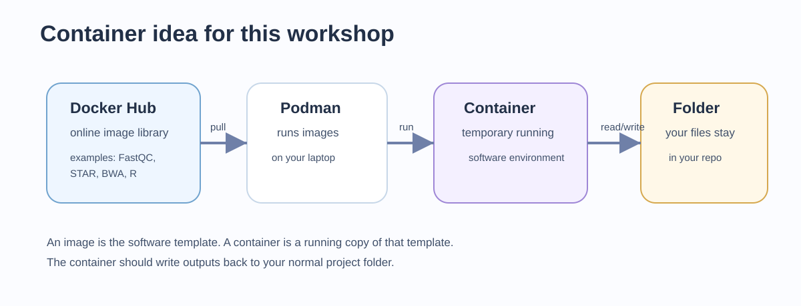
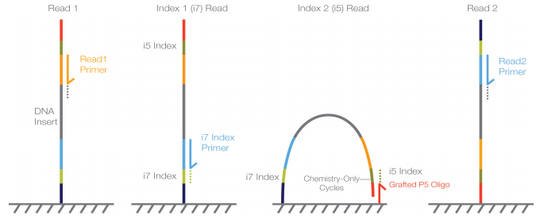

flowchart TD
project["Create a reproducible project + Git repository"]
metadata["Retrieve and organise public sample metadata"]
reference["Download matching reference genome + annotation"]
fastq["Download selected RNA-seq + ChIP-seq FASTQ files"]
inspect["Inspect compressed FASTQ files"]
fastp["Run fastp QC + trimming"]
ready["Reference + metadata + trimmed FASTQ ready for Days 2 and 3"]
project --> metadata
metadata --> reference
reference --> fastq
fastq --> inspect
inspect --> fastp
fastp --> ready
Day 1 - Reproducible project, public data, FASTQ QC, trimming, and reference files
Build the RNA-seq and ChIP-seq inputs used by the rest of the workshop
1. Before we start
You should have completed Day 0 and should be working from the root of your own workshop_ngs repository.
At the start of each practical session:
- Windows users should open Visual Studio Code connected to Ubuntu WSL, open a WSL terminal, and run the commands there.
- macOS and Linux users should open the
workshop_ngsfolder in Visual Studio Code and use the VS Code terminal. - Before running workshop commands, move to the repository root:
cd ~/workshop_ngs
pwdIf your repository is stored somewhere else, replace this path with the location of your own workshop_ngs folder. The command pwd should end with workshop_ngs.
Day 1 contains several network-dependent download steps. We run these with small task-specific Docker images so that the software is reproducible, but the network configuration is not part of the image. The workshop uses Docker Desktop on both supported laptop setups: macOS, and Windows with Ubuntu/WSL2. Windows users run the commands from the WSL2 Bash terminal, not from PowerShell or cmd.exe; macOS users run them from the VS Code or system terminal. The download commands are therefore the same on both platforms.
2. Overview
Day 1 starts the scientific workflow and sets the working style for the rest of the workshop.
Today we will discuss:
- reproducibility in practical bioinformatics;
- repository structure: Git/GitHub, Docker/Docker Hub, scripts, metadata, logs, and outputs;
- the reference-based NGS workflow used in this workshop;
- where public raw FASTQ files and metadata are stored;
- how to prepare simple metadata for script-based downloads;
- how to download selected RNA-seq and ChIP-seq FASTQ files;
- how to download a matched reference genome and annotation and derive the BED12 gene model needed for strandedness inference;
- how to inspect compressed FASTQ files from the command line;
- how to run
fastpfor FASTQ quality assessment and trimming; - how to inspect the
fastpHTML/JSON reports.
The Day 1 workflow is:
Today we retrieve and prepare the data required for the downstream RNA-seq and ChIP-seq analyses.
The main study is the HP1021 Helicobacter pylori multi-omics study:
- RNA-seq:
E-MTAB-13025 - ChIP-seq:
E-MTAB-13026
ImportantRecord the RNA library design before analysis
The RNA-seq dataset is rRNA-depleted, directional prokaryotic RNA-seq, sequenced as 150-bp paired-end reads (PE150; 2 × 150 bp). The publication’s library-preparation methods describe rRNA removal and dUTP/USER-based strand-selective library construction. This information affects how we interpret residual rRNA and, on Day 2, which strandedness setting we use for gene counting.
The full publication analysis is more complex than this workshop workflow. We retain the complete WT/WTS and ΔHP1021/ΔHP1021S sample design used in the workshop, while simplifying the downstream analysis for laptop-scale execution.
3. Reproducibility in bioinformatics
Bioinformatics results depend on many linked choices:
- which public samples were used;
- which files were downloaded;
- which reference genome and annotation were used;
- which software versions ran the commands;
- which command-line options were used;
- which intermediate and final outputs were produced;
- how the outputs were interpreted.
For this workshop, three linked components define the analysis:
\[ \boxed{\text{Reproducible analysis} = \text{inputs/provenance} + \text{code/parameters} + \text{software environment}} \]
- Inputs/provenance: sample and run accessions, downloaded-file checksums, and the exact reference assembly and annotation.
- Code/parameters: scripts, command-line options, statistical design, and thresholds.
- Software environment: the exact container image content, identified here by an immutable image digest.
Small outputs, logs, and interpretation notes are the evidence that connects those three components to the reported result, so we record them too.
| Project element | Reproducibility role | Commit to Git? |
|---|---|---|
| Metadata and provenance record | Defines samples, assays, conditions, replicates, accessions, input URLs/checksums, and reference identity | Yes |
| Shell script and parameter choices | Record the command logic and analysis decisions | Yes |
| Digest-pinned Docker image | Identifies the exact software environment that ran the command | Yes, record the full image reference |
| Dockerfile | Records a build recipe; live package repositories mean it does not, by itself, identify every resolved dependency | Yes |
| Log file | Records what happened when a command ran | Usually yes if small |
| FASTQ files | Large sequencing input files | No |
| Trimmed FASTQ files | Large generated intermediate files | No |
| fastp reports | Diagnostic outputs showing FASTQ quality and trimming/filtering results | Usually yes if small enough |
The important idea is simple: GitHub stores the recipe and small evidence files, not the heavy sequencing files.
4. Git and GitHub
Git is the local version-control system. It records changes to text files such as README.md, scripts, metadata, and notes. GitHub is the remote platform where you can back up and share the repository.
In this workshop, Git/GitHub are used for:
- project history;
- transparent changes to scripts and metadata;
- collaboration and troubleshooting;
- documenting what was done each day;
- submitting or sharing the final repository.
Git should not be used as storage for large sequencing data. FASTQ, BAM, BAI, bigWig, SRA files, large archives, and generated indices should be ignored.
During this lesson, you will use your GitHub account to create an empty personal repository for the workshop.
4.1 Create and initialize Git locally
From the terminal, make sure you are in your local workshop folder:
cd ~/workshop_ngs
pwdInitialize Git locally:
git init
git statusSet your Git identity if it has not already been configured on this computer:
git config --global user.name "Your Name"
git config --global user.email "your.email@example.com"
git config --global init.defaultBranch main4.2 Create an empty GitHub repository
Before connecting your local folder to GitHub, create an empty repository in your GitHub account.
In your browser:
- Go to GitHub: https://github.com/
- Log in.
- Click New repository.
- Use this repository name:
workshop_ngs- Choose Public or Private, depending on the course instructions.
- Do not add a README file.
- Do not add a
.gitignorefile. - Do not add a license.
- Click Create repository.
You should now see an empty GitHub repository page with a URL like:
https://github.com/YOUR_USERNAME/workshop_ngsKeep this page open. You will use this URL in the next terminal command.
Now connect your local folder to the empty GitHub repository. Replace YOUR_USERNAME with your GitHub username:
git remote add origin https://github.com/YOUR_USERNAME/workshop_ngs.git
git remote -v4.3 First Git commit
The first commit will be made after we create the project folders, the .gitignore, and a README file. This way Git starts by recording the intended repository structure rather than an empty folder.
The .gitignore file is a hidden text file that tells Git which files should not be tracked or uploaded to GitHub. In this workshop, GitHub stores the reproducible record of the analysis: scripts, metadata, notes, small tables, figures, logs, and documentation. It is not used as storage for large sequencing or alignment files.
NGS analyses often generate large FASTQ, BAM, bigWig, index, and temporary files. These files can quickly exceed practical GitHub storage limits and make repositories slow or difficult to clone. Larger project-related files are usually shared through other systems, such as institutional storage, shared drives, Zenodo, OSF, Figshare, or public sequencing archives. Those options are useful, but they are outside the scope of this workshop.
Create .gitignore in VS Code, or open it from the terminal:
nano .gitignorePaste this content, then save and close nano with Ctrl+X, then Y, then Enter:
# OS / R
.DS_Store
.Rhistory
.RData
# Raw sequencing data
*.fastq
*.fq
*.fastq.gz
*.fq.gz
*.sra
# Alignment files
*.sam
*.bam
*.bai
# Genome tracks
*.bw
*.bigWig
# Archives
*.zip
*.tar
*.tar.gz
# Reference genome and indexes
reference_genome/*
!reference_genome/REFERENCE.md
!reference_genome/.gitkeep
# Temporary SRA files
sra_tmp/You should now see .gitignore in the VS Code Explorer. You can open it there like any other text file to inspect or modify it.
Create a minimal README.md file:
nano README.mdPaste this content, then save and close nano with Ctrl+X, then Y, then Enter:
# Reproducible NGS workshopNow make the first commit. Informally, this asks Git to take a snapshot of the small text files that define the project so far.
git status
git add .gitignore README.md
git commit -m "Initialize workshop repository"
git branch -M main
git push -u origin mainWhat these commands do:
| Command | Meaning |
|---|---|
git status |
Show which files are new, modified, staged, or ignored. Run this often. |
git add .gitignore README.md |
Choose the two small text files that should go into the first commit. |
git commit -m "Initialize workshop repository" |
Save the first labeled snapshot in your local Git history. |
git branch -M main |
Make sure the main branch is called main, matching the GitHub default. |
git push -u origin main |
Upload the first commit to GitHub and remember origin main as the default push target. |
5. Docker and Docker Hub
Docker runs software inside container images. A container image is a packaged software environment. A container is a running instance of that image.
Docker Hub is an online registry where images can be downloaded. The repository also contains simple task-specific Dockerfiles under Docker_files/ so each image can be rebuilt if needed.
NoteDocker networking and DNS on macOS and Windows/WSL2
A Docker image contains software and libraries. Networking is created later, when the image is started as a container.
Before curl, fasterq-dump, or any other program can contact a server such as www.ebi.ac.uk, the hostname must first be translated into an IP address by the Domain Name System (DNS):
www.ebi.ac.uk -> DNS lookup -> IP address -> HTTPS connectionIf this lookup fails, the program never reaches EMBL-EBI or NCBI. For example:
curl: (6) Could not resolve host: www.ebi.ac.ukWith Docker Desktop, containers normally use Docker’s own internal DNS resolver, which forwards requests using the network configuration of the host laptop. On macOS this resolver may appear inside a container as an address such as 192.168.65.7; on Windows/WSL2 the address can be different. That is normal.
For the workshop we therefore do not specify --dns manually. In particular, do not force public resolvers such as 1.1.1.1 or 8.8.8.8: university, institutional, or VPN networks may block direct queries to them. If the laptop changes Wi-Fi or VPN, Docker Desktop may need to be restarted so that its networking layer picks up the new host configuration.
The Day 1 download images are intended to be multi-platform (linux/amd64 and linux/arm64). Therefore the download commands also do not specify --platform: Docker selects the correct image automatically for Intel/AMD computers or Apple Silicon.

This connects directly to reproducibility:
- Git tracks the scripts, parameters, metadata, and notes that describe what you did;
- a Docker image digest identifies the exact software environment that ran those scripts;
- a Dockerfile records how an image was built, but is a build recipe rather than an exact record of the resolved environment.
Image tags are useful human-readable labels, but tags such as latest are mutable: the same command can download different content later. Workshop commands therefore use image@sha256:.... The digest is long because it is a content identity, not a nickname. The release inventory is recorded in Docker_files/images.lock.tsv in the course repository.
Before running analysis images, we will run a small Docker test again together. This assumes that your terminal is already in the workshop_ngs repository root.
5.1 Test Docker
Mount the whole repository into the container and write a test file back into the repository:
docker run --rm \
--user "$(id -u):$(id -g)" \
-v "$PWD:/work" \
-w /work \
docker.io/library/alpine \
sh -c 'echo "Hello from Docker" > test_hello.txt'
cat test_hello.txtThis means:
--user "$(id -u):$(id -g)"runs the container process with the numeric UID/GID of your current terminal user, preventing files written into the mounted repository from becoming owned byrootor by an unrelated container user;-v "$PWD:/work"mounts your current repository folder inside the container as/work;-w /worktells the container to run from that mounted folder;sh -c 'echo "Hello from Docker" > test_hello.txt'creates a small test file from inside the container;- the container is removed after the command finishes;
cat test_hello.txtconfirms that the file is visible in your repository on your computer.
NoteWhy use –user for mounted workshop files? … Something I ignored completely..
A container has its own user identity. When it writes into /work, however, /work is your real workshop folder on the host. On Linux and Ubuntu/WSL2, the numeric UID/GID used by the container therefore determines the ownership and write permissions of those files. Running as root may appear to work but can leave root-owned outputs; running as a different non-root UID can instead fail with Permission denied.
On macOS this problem is often less visible because Docker Desktop mediates filesystem access through its Linux VM. Do not assume that a command that writes cleanly on macOS will have identical ownership behaviour on Linux/WSL2.
Also be careful with older or third-party Mamba/Micromamba-based images: many intentionally run as a dedicated non-root user such as mambauser. That user may not have the same numeric UID/GID as the person running the workshop. The explicit --user "$(id -u):$(id -g)" option makes the ownership policy independent of how the image was built.
6. Reference-based NGS analysis
This workshop uses reference-based analysis:
FASTQ reads
-> quality control and trimming
-> alignment to a reference genome
-> filter mapped reads
-> sorted and indexed BAM files
-> assay-specific analysis
-> RNA-seq gene counts and differential expression
-> ChIP-seq coverage tracks, peak calls, and motifsThe reference genome FASTA defines the coordinate system. The annotation GFF3/GTF defines gene and feature coordinates. If the FASTA and annotation come from different assemblies or use different sequence names, mapping, counting, and peak-to-gene integration can fail or silently become wrong.
This is why inputs/provenance are a separate reproducibility component: identical code, parameters, and container images can produce different coordinates and counts when the reference assembly or annotation changes.
6.1 Reference genome FASTA
A FASTA file is a plain text file. Each sequence starts with a header line beginning with >, followed by one or more lines of DNA sequence:
>chr1
ATGCGTACGTTAGCTAGCTAGCTAACGATCGATCGATCG...
CGATCGATTTAGCTAGCATCGATCGATCGTACGATCGTA...
>chr2
TTGACGATCGATCGATCGTAGCTAGCTAGCTAACGATCA...For a human reference genome, headers may look like >chr1, >chr2, >chrX, and so on. For a bacterial genome such as H. pylori, there may be one main chromosome sequence and sometimes plasmid sequences. The exact names must match the annotation file. In this workshop, the chromosome name is NZ_AP026446.1; any different sequence accession belongs to another coordinate system and must not be mixed into the workflow.
6.2 Annotation files: GFF3 and GTF
Annotation files are also plain text, but they are tab-separated tables. Each row describes one genomic feature on the FASTA coordinate system:
seqid source type start end score strand phase attributes
chr1 RefSeq gene 1000 2500 . + . ID=geneA;Name=geneA
chr1 RefSeq mRNA 1000 2500 . + . ID=txA;Parent=geneA
chr1 RefSeq exon 1000 1200 . + . Parent=txA
chr1 RefSeq exon 1800 2500 . + . Parent=txAThe first eight columns define where the feature is. The last column stores identifiers and grouping information. In GFF3, fields such as ID= and Parent= connect features together. In GTF, the last column uses entries such as gene_id "geneA"; transcript_id "txA";.
NoteCoordinate conventions
One detail that often causes confusion is coordinate convention. GFF3 and GTF use 1-based closed coordinates: base 1 is the first base, and a feature from 1000 to 1200 includes both base 1000 and base 1200. BED files, which are common for peaks and genome-browser intervals, use 0-based half-open coordinates: the start is counted from 0 and the end is not included.
This sounds annoying because it is. The practical rule is: do not casually copy coordinates between file formats by hand. Use tools that understand the format, such as featureCounts, bedtools, samtools, IGV, and Bioconductor interval classes.
A eukaryotic gene with introns and exons can be represented like this:
FASTA coordinate: chr1:1000-2500
geneA on + strand
1000 1200 1800 2500
|-----------|...........|-----------|
exon 1 intron exon 2
GFF3 rows:
chr1 RefSeq gene 1000 2500 . + . ID=geneA;Name=geneA
chr1 RefSeq mRNA 1000 2500 . + . ID=txA;Parent=geneA
chr1 RefSeq exon 1000 1200 . + . Parent=txA
chr1 RefSeq exon 1800 2500 . + . Parent=txAFor H. pylori, the annotation is simpler because bacterial protein-coding genes usually do not have introns. A typical bacterial annotation is closer to:
NZ_AP026446.1 RefSeq gene 1500 2400 . - . ID=gene-example;Name=example
NZ_AP026446.1 RefSeq CDS 1500 2400 . - 0 ID=cds-example;Parent=gene-example;product=example proteinAnnotation files can be complicated to handle by hand. In this workshop, we use standard GFF3/GTF files and let tools read them for us. Aligners place reads on FASTA coordinates, featureCounts uses the annotation to count RNA-seq reads over genes or CDS features, and integration steps compare ChIP-seq peaks with nearby annotated genes.
For this bacterial workshop, we use matched NCBI reference genome and annotation files stored under reference_genome/.
6.3 Download reference genome and annotation
We will first browse the reference source together:
- NCBI assembly page: GCF_025998455.1
- NCBI FTP directory: GCF_025998455.1_ASM2599845v1
NCBI reports this complete CHC155 RefSeq assembly as latest and identifies it as a reference genome. We download its chromosome NZ_AP026446.1 as a genomic FASTA together with the matching RefSeq GFF3 and GTF annotations.
ImportantReprocess from raw FASTQ
All workshop counts, BAM files, bigWigs, peaks, motifs, and integration tables are regenerated after mapping the raw FASTQ files to GCF_025998455.1. Do not reuse processed coordinates or count tables produced with another assembly.
What is a BED12 file?
BED is a tab-separated format for describing genomic intervals. The first six BED12 columns locate and identify a feature; the final six describe how that feature is drawn and how it is divided into blocks such as exons:
location and identity
chrom chromStart chromEnd name score strand
display and block structure
thickStart thickEnd itemRgb blockCount blockSizes blockStarts| Columns | Names | Meaning in genes.bed |
|---|---|---|
| 1–3 | chrom, chromStart, chromEnd |
Sequence name, 0-based inclusive start, and exclusive end boundary of the gene. |
| 4–6 | name, score, strand |
Gene ID, placeholder score, and + or - strand. |
| 7–9 | thickStart, thickEnd, itemRgb |
Display fields; we use the full gene interval and the default colour. |
| 10–12 | blockCount, blockSizes, blockStarts |
Number, sizes, and relative starts of exon-like blocks. |
Most H. pylori genes are intron-free, so each gene is represented by one block. For example:
GFF3 gene:
NZ_AP026446.1 RefSeq gene 1500 2400 . - . ID=gene-example
BED12 gene:
NZ_AP026446.1 1499 2400 gene-example 0 - 1499 2400 0 1 901 0The GFF3 start 1500 becomes the 0-based BED start 1499; the BED end remains 2400. The final three values mean one block of length 901 starting at offset 0 from the beginning of the interval. The AWK command below performs this conversion for every GFF3 gene row and preserves the strand needed by RSeQC.
Create the folders needed for this step:
mkdir -p reference_genome
mkdir -p scripts/day1Create the reference script: scripts/day1/01_reference_genome_annotation.sh:
nano scripts/day1/01_reference_genome_annotation.shPaste this script, then save and close nano with Ctrl+X, then Y, then Enter:
#!/usr/bin/env bash
set -euo pipefail
out_dir="reference_genome"
log_dir="results/logs/day1"
assembly="GCF_025998455.1_ASM2599845v1"
base_url="https://ftp.ncbi.nlm.nih.gov/genomes/all/GCF/025/998/455/${assembly}"
# Fail early if the download host cannot be reached.
echo "Checking network access to NCBI..."
if ! curl -fsS --connect-timeout 10 -o /dev/null https://ftp.ncbi.nlm.nih.gov/; then
echo "ERROR: NCBI cannot be reached. If curl reports error 6, DNS resolution is failing." >&2
echo "Current resolver configuration:" >&2
cat /etc/resolv.conf 2>/dev/null || true
exit 1
fi
mkdir -p "${out_dir}" "${log_dir}"
log_file="${log_dir}/reference_download.log"
: > "${log_file}"
echo "Downloading genome FASTA" | tee -a "${log_file}"
curl -fL "${base_url}/${assembly}_genomic.fna.gz" -o "${out_dir}/genome.fa.gz"
gzip -df "${out_dir}/genome.fa.gz"
echo "Downloading GFF3 annotation" | tee -a "${log_file}"
curl -fL "${base_url}/${assembly}_genomic.gff.gz" -o "${out_dir}/annotation.gff3.gz"
gzip -df "${out_dir}/annotation.gff3.gz"
echo "Downloading GTF annotation" | tee -a "${log_file}"
curl -fL "${base_url}/${assembly}_genomic.gtf.gz" -o "${out_dir}/annotation.gtf.gz"
gzip -df "${out_dir}/annotation.gtf.gz"
echo "Creating BED12 gene model for RSeQC" | tee -a "${log_file}"
awk -F '\t' '
BEGIN { OFS = "\t" }
$3 == "gene" {
split($9, attributes, ";")
sub(/^ID=/, "", attributes[1])
bed_start = $4 - 1
print $1, bed_start, $5, attributes[1], 0, $7, bed_start, $5, 0, 1, $5 - bed_start, 0
}
' "${out_dir}/annotation.gff3" > "${out_dir}/genes.bed"
echo "Calculating SHA-256 checksums" | tee -a "${log_file}"
sha256sum \
"${out_dir}/genome.fa" \
"${out_dir}/annotation.gff3" \
"${out_dir}/annotation.gtf" \
"${out_dir}/genes.bed" \
> "${out_dir}/reference_files.sha256"
cat > "${out_dir}/REFERENCE.md" <<EOF
# Reference genome and annotation
- Organism: Helicobacter pylori strain CHC155
- RefSeq assembly accession: GCF_025998455.1
- Assembly name: ASM2599845v1
- Chromosome accession: NZ_AP026446.1
- Primary workflow annotation: reference_genome/annotation.gff3
- Companion annotation: reference_genome/annotation.gtf
- RSeQC BED12 gene model: reference_genome/genes.bed
- Genome FASTA: reference_genome/genome.fa
- SHA-256 checksums: reference_genome/reference_files.sha256
- NCBI FTP directory: ${base_url}/
- Download script: scripts/day1/01_reference_genome_annotation.sh
- Downloaded (UTC): $(date -u '+%Y-%m-%dT%H:%M:%SZ')
All workshop reads and all derived coordinates are generated against this
assembly. Processed files from other assemblies are not compatible.
EOF
echo "Reference bundle ready in ${out_dir}" | tee -a "${log_file}"6.4 Read the first Bash script
Bash is a command-line interpreter: it reads commands from the terminal or from a script file and runs them in order. This reference script shows one explicit download command for each source file: the genome FASTA, GFF3 annotation, and GTF annotation. Each compressed download is decompressed immediately. The script derives the BED12 gene model needed by RSeQC, records SHA-256 checksums and the UTC download time, and writes the assembly identity to REFERENCE.md.
| Code part | Meaning |
|---|---|
#!/usr/bin/env bash |
Run this file with Bash. |
set -euo pipefail |
Stop if a command fails, if a variable is missing, or if part of a pipeline fails. |
out_dir="reference_genome" |
Store a reusable value in a variable. |
${out_dir} |
Use the value stored in the variable. |
"${out_dir}/file" |
Build a file path safely. The quotes protect paths if they contain special characters. |
mkdir -p |
Create a folder if needed. Do not fail if it already exists. |
curl -fL URL -o file |
Download a URL and save it as file. |
gzip -df file.gz |
Decompress file.gz, replace an older uncompressed copy if needed, and remove the .gz copy. |
awk -F '\t' |
Read the tab-separated GFF3 and select rows whose feature type is gene. |
bed_start = $4 - 1 |
Convert the 1-based inclusive GFF3 start to the 0-based BED start. The GFF3 end coordinate already matches the BED end boundary. |
print ... |
Write the 12 BED columns required by RSeQC. Each intron-free bacterial gene is represented as one block. |
sha256sum ... > reference_files.sha256 |
Record checksums for the generated FASTA, GFF3, GTF, and BED files so the exact reference bundle can be verified later. |
To inspect command options:
curl --helpgzip --help6.5 Check the network and run the reference download
Use the same Bash terminal for these commands on both supported platforms:
- macOS: VS Code terminal or Terminal;
- Windows: Ubuntu/WSL2 terminal with Docker Desktop WSL integration enabled.
Do not run the workshop Bash commands from PowerShell. In Bash, $PWD expands to the current project directory on both macOS and WSL2, so the same Docker mount works on both systems. On Windows, keep the workshop repository in the WSL2 Linux filesystem (for example ~/workshop_ngs) rather than under /mnt/c/...; this avoids unnecessary filesystem overhead during large FASTQ downloads and fasterq-dump conversion.
Before a large download, first test the server from the laptop/WSL2 environment:
curl -I https://ftp.ncbi.nlm.nih.govThen test the same connection from the Docker image that will perform the download:
docker run --rm \
docker.io/fgualdr/ngs-curl \
bash -lc 'echo "DNS inside the container:"; cat /etc/resolv.conf; echo; curl -I https://ftp.ncbi.nlm.nih.gov'The nameserver shown inside the container is normally a Docker Desktop internal address. It does not need to match the DNS address shown by macOS or WSL2.
If the test succeeds, run the reference download:
docker run --rm \
--user "$(id -u):$(id -g)" \
-v "$PWD:/work" \
-w /work \
docker.io/fgualdr/ngs-curl \
bash scripts/day1/01_reference_genome_annotation.sh
WarningIf a download fails with ‘Could not resolve host’
Interpret the failure in this order:
| Test | Interpretation |
|---|---|
curl fails in the macOS/WSL2 terminal |
The laptop, Wi-Fi, VPN, institutional proxy, or host DNS is the problem. Docker is not yet the relevant layer. |
Host/WSL2 curl works, but container curl fails |
Docker Desktop networking/DNS/proxy forwarding is the problem. |
| Both tests work | Proceed with the download script. |
Do not add --dns 1.1.1.1 or --dns 8.8.8.8 as a generic fix. These public DNS servers may be inaccessible from institutional or VPN networks.
On macOS, restart Docker Desktop after a Wi-Fi/VPN change and keep Docker networking/DNS on its default/automatic settings.
On Windows/WSL2, first verify that Docker Desktop integration is enabled for the Ubuntu distribution. If networking remains broken after a VPN or network change, restart Docker Desktop. As a stronger reset, close WSL terminals, run wsl --shutdown from Windows PowerShell, restart Docker Desktop, and reopen Ubuntu/WSL2.
Expected outputs:
reference_genome/genome.fa
reference_genome/annotation.gff3
reference_genome/annotation.gtf
reference_genome/genes.bed
reference_genome/reference_files.sha256
reference_genome/REFERENCE.md
results/logs/day1/reference_download.logBefore mapping, inspect the generated reference files and confirm that their sequence names agree:
grep '^>' reference_genome/genome.fa | head
grep -v '^#' reference_genome/annotation.gff3 | head
grep -v '^#' reference_genome/annotation.gtf | head
head reference_genome/genes.bed
cat reference_genome/reference_files.sha256
awk -F '\t' '{print NF; exit}' reference_genome/genes.bed
grep -v '^#' reference_genome/annotation.gff3 | wc -lThe BED command should print 12, confirming that the derived gene model has the 12 columns expected by RSeQC.
7. From Illumina BCL files to FASTQ files
Illumina instruments image DNA clusters cycle by cycle. The instrument software converts images into base calls and quality estimates. A simplified flow is:
flowcell images
-> intensity files
-> BCL base-call files
-> demultiplexing by sample index
-> per-sample FASTQ files
In paired-end sequencing, the same DNA fragment is read from both ends. The first sequencing read becomes read 1, usually saved as an _R1.fastq.gz file. After index reads identify the sample barcode, the opposite end of the same fragment is sequenced as read 2, usually saved as an _R2.fastq.gz file.
This means paired-end FASTQ files come in matched pairs:
sample_A_R1.fastq.gz read 1 sequences from one end of each fragment
sample_A_R2.fastq.gz read 2 sequences from the opposite endFor each fragment, the R1 and R2 records should remain synchronized: record 1 in the R1 file corresponds to record 1 in the R2 file. Trimming and mapping tools therefore need both files together for paired-end data.
FASTQ files are often called “raw data” in public repositories, but they are already processed outputs of base calling and demultiplexing.
7.1 FASTQ structure and read identifiers
Each FASTQ read has four lines:
@read_identifier
ACGT...
+
quality_stringThe four lines mean:
| FASTQ line | Meaning |
|---|---|
| 1 | Read identifier, usually including instrument/run/lane/tile/coordinate and sometimes read/index information |
| 2 | Called DNA sequence |
| 3 | Separator, often just + |
| 4 | Per-base quality string encoded as Phred quality scores |
An Illumina-style read identifier may look like:
@A00488:92:H2JWNDSX3:2:1101:1234:5678 1:N:0:ATTACTCG+GTCGATTAThe exact format varies, but common fields include:
- instrument name;
- run number;
- flowcell ID;
- lane;
- tile;
- x/y cluster coordinates;
- read number, such as read 1 or read 2;
- filter flag;
- sample index or barcode.
Public archives may rewrite read identifiers, so do not assume every file has exactly the same format.
The quality string encodes Phred quality scores:
\[ Q = -10 \log_{10}(p) \]
where (p) is the estimated probability of an incorrect base call. Q30 means an approximate error probability of 0.001.
FASTQ files may be single-end or paired-end. Paired-end libraries have read 1 and read 2 files, usually named with _R1 and _R2 or _1 and _2. Files are usually compressed as .fastq.gz.
7.2 Public archives we will browse together
There are several routes from a paper or accession to FASTQ files. We will look at these together in the browser:
- NCBI GEO metadata and processed data, linked to raw high-throughput sequencing reads in SRA: https://www.ncbi.nlm.nih.gov/geo/
- ENA Browser: https://www.ebi.ac.uk/ena/browser/home
- ArrayExpress collection in BioStudies: RNA-seq study
E-MTAB-13025and ChIP-seq studyE-MTAB-13026
The old ArrayExpress interface was retired in 2022 (EMBL-EBI retirement notice). The collection now lives in BioStudies. For high-throughput sequencing studies, BioStudies provides the study record, protocols, processed files, and SDRF metadata, while the linked raw reads are brokered to ENA (current EMBL-EBI collection guide).
The same biological run can often be reached through more than one archive. The practical difference is how we download the data:
| Route | What we usually get | Practical point |
|---|---|---|
| GEO metadata/processed layer + SRA raw-data layer | GEO series and sample records linked to SRA experiments and runs such as SRR... |
GEO brokers raw HTS files to SRA; SRA downloads often use fasterq-dump and can be slow on laptops |
| ENA | direct FASTQ URLs | direct route: one URL downloads one FASTQ file |
| ArrayExpress collection in BioStudies + ENA | study metadata and SDRF files in BioStudies; linked raw reads in ENA | useful for sample names, conditions, run accessions, and direct FASTQ links |
For the main workshop, we use the ArrayExpress collection in BioStudies + ENA route because it is easier to explain and easier to script.
7.3 ArrayExpress collection in BioStudies + ENA route
For this workshop, BioStudies supplies the ArrayExpress study records and SDRF metadata; the linked ENA records supply the run accessions and FASTQ URLs that we need.
One script performs the complete retrieval step:
download original SDRFs
-> retain all samples in the experimental design
-> add HTTPS_FASTQ_URI and FASTQ_NAME columns
-> download and rename the FASTQ files
-> write a metadata provenance record and logThe two modified metadata tables are RNAseq_metadata.txt and Chipseq_metadata.txt. They contain the sample information and FASTQ filenames used throughout the rest of the workshop.
Create the combined metadata and FASTQ script
Open the study pages together:
- RNA-seq:
E-MTAB-13025 - ChIP-seq:
E-MTAB-13026
Create scripts/day1/02_download_ena_fastq.sh:
nano scripts/day1/02_download_ena_fastq.shPaste this script:
#!/usr/bin/env bash
set -euo pipefail
mkdir -p \
raw_data/metadata \
raw_data/fastq/rnaseq \
raw_data/fastq/chipseq \
results/logs/day1
log_file="results/logs/day1/metadata_fastq_download.log"
: > "${log_file}"
# Fail early if EMBL-EBI cannot be reached.
echo "Checking network access to EMBL-EBI..." | tee -a "${log_file}"
if ! curl -fsS --connect-timeout 10 -o /dev/null https://www.ebi.ac.uk/; then
echo "ERROR: EMBL-EBI cannot be reached. If curl reports error 6, DNS resolution is failing." >&2
echo "Current resolver configuration:" >&2
cat /etc/resolv.conf 2>/dev/null || true
exit 1
fi
# -------------------------------------------------------------------------
# RNA-seq metadata
# -------------------------------------------------------------------------
echo "Downloading RNA-seq metadata" | tee -a "${log_file}"
curl -fL \
https://ftp.ebi.ac.uk/biostudies/fire/E-MTAB-/025/E-MTAB-13025/Files/E-MTAB-13025.sdrf.txt \
-o raw_data/metadata/E-MTAB-13025.sdrf.txt
# Keep the complete RNA-seq design, including ΔHP1021 samples
cp raw_data/metadata/E-MTAB-13025.sdrf.txt \
raw_data/metadata/RNAseq_metadata.tmp
# Add two new columns:
# HTTPS_FASTQ_URI = FASTQ address converted from ftp:// to https://
# FASTQ_NAME = simplified name such as WT_1_R1.fastq.gz
head -n 1 raw_data/metadata/RNAseq_metadata.tmp |
sed $'s/$/\tHTTPS_FASTQ_URI\tFASTQ_NAME/' \
> raw_data/metadata/RNAseq_metadata.txt
tail -n +2 raw_data/metadata/RNAseq_metadata.tmp |
while IFS= read -r line; do
sample=$(printf '%s\n' "${line}" | cut -d $'\t' -f1)
url=$(printf '%s\n' "${line}" | cut -d $'\t' -f32 | tr -d '\r')
# ftp://... -> https://...
url="https://${url#ftp://}"
# ERR11479310_1.fastq.gz -> 1
filename="${url##*/}"
mate="${filename%.fastq.gz}"
mate="${mate##*_}"
# Retain the metadata sample name unchanged for downstream analyses.
simple_sample="${sample}"
# WT_1 + 1 -> WT_1_R1.fastq.gz; ΔHP1021_1 -> ΔHP1021_1_R1.fastq.gz
fastq_name="${simple_sample}_R${mate}.fastq.gz"
printf '%s\t%s\t%s\n' \
"${line}" \
"${url}" \
"${fastq_name}" \
>> raw_data/metadata/RNAseq_metadata.txt
done
rm raw_data/metadata/RNAseq_metadata.tmp
# -------------------------------------------------------------------------
# ChIP-seq metadata
# -------------------------------------------------------------------------
echo "Downloading ChIP-seq metadata" | tee -a "${log_file}"
curl -fL \
https://ftp.ebi.ac.uk/biostudies/fire/E-MTAB-/026/E-MTAB-13026/Files/E-MTAB-13026.sdrf.txt \
-o raw_data/metadata/E-MTAB-13026.sdrf.txt
# Keep the complete ChIP-seq design, including ΔHP1021 samples
cp raw_data/metadata/E-MTAB-13026.sdrf.txt \
raw_data/metadata/Chipseq_metadata.tmp
# Add the HTTPS_FASTQ_URI and FASTQ_NAME columns
head -n 1 raw_data/metadata/Chipseq_metadata.tmp |
sed $'s/$/\tHTTPS_FASTQ_URI\tFASTQ_NAME/' \
> raw_data/metadata/Chipseq_metadata.txt
tail -n +2 raw_data/metadata/Chipseq_metadata.tmp |
while IFS= read -r line; do
sample=$(printf '%s\n' "${line}" | cut -d $'\t' -f1)
url=$(printf '%s\n' "${line}" | cut -d $'\t' -f31 | tr -d '\r')
# ftp://... -> https://...
url="https://${url#ftp://}"
# ERR11468761_1.fastq.gz -> 1
filename="${url##*/}"
mate="${filename%.fastq.gz}"
mate="${mate##*_}"
# Retain the metadata sample name unchanged for downstream analyses.
simple_sample="${sample}"
# WT_1 + 1 -> WT_1_R1.fastq.gz; ΔHP1021_1 -> ΔHP1021_1_R1.fastq.gz
fastq_name="${simple_sample}_R${mate}.fastq.gz"
printf '%s\t%s\t%s\n' \
"${line}" \
"${url}" \
"${fastq_name}" \
>> raw_data/metadata/Chipseq_metadata.txt
done
rm raw_data/metadata/Chipseq_metadata.tmp
# -------------------------------------------------------------------------
# Download RNA-seq FASTQ files
# -------------------------------------------------------------------------
echo "Downloading RNA-seq FASTQ files" | tee -a "${log_file}"
# The two new columns are columns 33 and 34
rev raw_data/metadata/RNAseq_metadata.txt |
cut -d $'\t' -f1,2 |
rev |
tail -n +2 |
while IFS=$'\t' read -r url fastq_name; do
echo "Downloading ${fastq_name}" | tee -a "${log_file}"
curl -fL \
"${url}" \
-o "raw_data/fastq/rnaseq/${fastq_name}"
done
# -------------------------------------------------------------------------
# Download ChIP-seq FASTQ files
# -------------------------------------------------------------------------
echo "Downloading ChIP-seq FASTQ files" | tee -a "${log_file}"
# The two new columns are columns 32 and 33
rev raw_data/metadata/Chipseq_metadata.txt |
cut -d $'\t' -f1,2 |
rev |
tail -n +2 |
while IFS=$'\t' read -r url fastq_name; do
echo "Downloading ${fastq_name}" | tee -a "${log_file}"
curl -fL \
"${url}" \
-o "raw_data/fastq/chipseq/${fastq_name}"
done
# -------------------------------------------------------------------------
# Record what was done
# -------------------------------------------------------------------------
cat > raw_data/metadata/METADATA.md <<EOF
# Metadata download and modification
RNA-seq metadata:
https://ftp.ebi.ac.uk/biostudies/fire/E-MTAB-/025/E-MTAB-13025/Files/E-MTAB-13025.sdrf.txt
ChIP-seq metadata:
https://ftp.ebi.ac.uk/biostudies/fire/E-MTAB-/026/E-MTAB-13026/Files/E-MTAB-13026.sdrf.txt
The metadata files were modified as follows:
- All samples in the SDRFs were retained, including the ΔHP1021 genotype.
- Local FASTQ filenames retain the sample names from the metadata, including `ΔHP1021` and `ΔHP1021S`.
- ENA FASTQ addresses were converted from ftp:// to https://.
- A new HTTPS_FASTQ_URI column was added.
- A new FASTQ_NAME column was added.
- FASTQ names combine the sample name with the paired-end read number.
Example:
WT_1 + ERR11479310_1.fastq.gz -> WT_1_R1.fastq.gz
WT_1 + ERR11479310_2.fastq.gz -> WT_1_R2.fastq.gz
RNA-seq FASTQ files:
raw_data/fastq/rnaseq
ChIP-seq FASTQ files:
raw_data/fastq/chipseq
EOF
echo "Metadata processing and FASTQ download complete" | tee -a "${log_file}"What each block does
| Script block | What it does |
|---|---|
| Setup | Creates the metadata, RNA-seq FASTQ, ChIP-seq FASTQ, and log folders, then starts a new log. |
| RNA-seq metadata | Downloads the original SDRF, retains the complete design including ΔHP1021, reads the FASTQ URL from column 32, and adds the HTTPS URL and metadata-derived local filename. |
| ChIP-seq metadata | Retains the complete design including ΔHP1021 and performs the same operations using the FASTQ URL in column 31 of the ChIP-seq SDRF. |
| FASTQ downloads | Each loop reads the final URL and filename columns, downloads the files, and saves them under their simplified names. |
| Provenance | Writes METADATA.md and records progress in metadata_fastq_download.log. |
NoteBash walkthrough: reading and renaming one metadata row
This loop is worth reading slowly because it combines several Bash ideas that will reappear throughout the workshop:
tail -n +2 raw_data/metadata/Chipseq_metadata.tmp |
while IFS= read -r line; do
sample=$(printf '%s\n' "${line}" | cut -d $'\t' -f1)
url=$(printf '%s\n' "${line}" | cut -d $'\t' -f31 | tr -d '\r')
url="https://${url#ftp://}"
filename="${url##*/}"
mate="${filename%.fastq.gz}"
mate="${mate##*_}"
fastq_name="${sample}_R${mate}.fastq.gz"
printf '%s\t%s\t%s\n' \
"${line}" \
"${url}" \
"${fastq_name}" \
>> raw_data/metadata/Chipseq_metadata.txt
done| Bash code | What it means here |
|---|---|
tail -n +2 file |
Print the file starting from line 2. The header is skipped, so the loop processes only sample rows. |
\| |
A pipe: send the output of the command on the left directly to the command on the right. |
while ...; do ... done |
Repeat the commands between do and done once for every input row. |
IFS= read -r line |
Read one complete row into the variable line. IFS= prevents Bash from splitting the row on spaces; -r prevents backslashes from being interpreted. |
${line} |
Use the value stored in the variable line. The quotes in "${line}" prevent unwanted word splitting or wildcard expansion. |
$(command) |
Command substitution: run command and store its output. For example, sample=$(...) stores the extracted sample name in sample. |
printf '%s\n' "${line}" |
Print the row exactly as a string followed by a newline. %s means “insert a string”; \n means newline. printf is preferred over echo when exact text handling matters. |
cut -d $'\t' -f1 |
Split the row using a tab as the delimiter (-d $'\t') and extract field 1 (-f1): here, the sample name. $'\t' is Bash syntax for one literal tab character. |
cut -d $'\t' -f31 |
Split on tabs and extract field 31: here, the ChIP-seq FASTQ URL. RNA-seq uses -f32 because its SDRF has a different column layout. |
tr -d '\r' |
Remove carriage-return characters (\r) that can occur in text files with Windows-style line endings. |
url="https://${url#ftp://}" |
Bash parameter expansion. ${url#ftp://} removes ftp:// from the beginning of the string, then https:// is added. |
filename="${url##*/}" |
Remove everything through the last /, leaving only the filename, e.g. ERR11468761_1.fastq.gz. |
mate="${filename%.fastq.gz}" |
Remove the suffix .fastq.gz. |
mate="${mate##*_}" |
Remove everything through the last _, leaving the mate number, e.g. 1 or 2. |
fastq_name="${sample}_R${mate}.fastq.gz" |
Build a new filename by combining variables and literal text, e.g. WT_1_R1.fastq.gz. |
printf '%s\t%s\t%s\n' ... |
Print three strings separated by tabs (\t) and finish with a newline. This creates one new TSV row. |
\ at the end of a line |
Continue the same shell command on the next physical line. It is only for readability. |
>> file |
Append output to a file. In contrast, > file overwrites the file. |
For example:
sample = WT_1
url = ftp://.../ERR11468761_1.fastq.gz
filename = ERR11468761_1.fastq.gz
mate = 1
result = WT_1_R1.fastq.gz
TipOther Bash syntax used in the download script
| Bash code | Meaning |
|---|---|
#!/usr/bin/env bash |
Run the script with the Bash interpreter found in the current environment. |
set -euo pipefail |
Stop on command errors (-e), undefined variables (-u), and failures inside pipelines (pipefail). This makes scripts fail early instead of silently continuing. |
mkdir -p directory |
Create a directory and any missing parent directories; do not fail if it already exists. |
: > file |
Create an empty file or truncate an existing one. Here it starts a fresh log. |
echo "message" \| tee -a log |
Show a message on screen and append the same message to a log file. |
curl -fL URL -o file |
Download URL; -f reports HTTP errors, -L follows redirects, and -o specifies the output filename. |
grep -v "pattern" file |
Print every line except those matching pattern. |
head -n 1 file |
Print only the first line, here the metadata header. |
sed $'s/$/\t.../' |
Append text to the end of a line; \t inserts tab characters. |
rm file |
Remove a temporary file once it is no longer needed. |
rev file \| cut -d $'\t' -f1,2 \| rev |
Reverse each line, explicitly split on tabs, select fields 1 and 2, then reverse them back. Because the line was reversed first, these correspond to the original last two columns. |
cat > file <<EOF ... EOF |
Write a multi-line block of text to a file. This construct is called a here-document. |
The two FASTQ-download blocks then use the same logic: select the final URL and filename columns, skip the header, read one URL/name pair at a time, and let curl save each file under the chosen local name.
Check the EBI connection and run the script
The ArrayExpress/ENA route uses curl inside the ngs-curl image. The command is identical from macOS Bash and Ubuntu/WSL2 Bash.
First test EBI from inside the image:
docker run --rm \
docker.io/fgualdr/ngs-curl \
bash -lc 'echo "DNS inside the container:"; cat /etc/resolv.conf; echo; curl -I https://www.ebi.ac.uk'If the test succeeds, run the complete metadata + FASTQ download:
docker run --rm \
--user "$(id -u):$(id -g)" \
-v "$PWD:/work" \
-w /work \
docker.io/fgualdr/ngs-curl \
bash scripts/day1/02_download_ena_fastq.shHere Docker selects the correct image architecture automatically. -v "$PWD:/work" mounts the current workshop repository as /work inside the container, and -w /work makes that mounted directory the working directory. The files written by the script therefore appear directly in your local raw_data/ folder.
Inspect the final URL and filename columns, downloaded files, provenance note, and log:
rev raw_data/metadata/RNAseq_metadata.txt | cut -d $'\t' -f1,2 | rev | head
rev raw_data/metadata/Chipseq_metadata.txt | cut -d $'\t' -f1,2 | rev | head
ls -lh raw_data/metadata/RNAseq_metadata.txt
ls -lh raw_data/metadata/Chipseq_metadata.txt
ls -lh raw_data/metadata/METADATA.md
ls -lh raw_data/fastq/rnaseq/*.fastq.gz
ls -lh raw_data/fastq/chipseq/*.fastq.gz
cat results/logs/day1/metadata_fastq_download.logThe metadata now retain the complete design. The WT/WTS and ΔHP1021/ΔHP1021S libraries are all downloaded, with R1 and R2 files for every biological replicate. Local filenames retain the sample names from the metadata. Keep the original SDRFs as downloaded provenance records; use RNAseq_metadata.txt and Chipseq_metadata.txt in the subsequent workshop steps.
Inspect the downloaded FASTQ files
Look inside one compressed FASTQ file manually. Choose one RNA-seq R1 file that exists in your folder:
zcat raw_data/fastq/rnaseq/WT_1_R1.fastq.gz | heador on OSX use gzcat
gzcat raw_data/fastq/rnaseq/WT_1_R1.fastq.gz | headYou should see repeated four-line FASTQ records. The first line of each record is the read identifier, the second line is the sequence, the third line starts with +, and the fourth line contains the quality scores.
For paired-end data, each read in the R1 file should have a matching read in the R2 file. Copy one read identifier from the first line of the R1 output. You only need the shared identifier before any /1, /2, or read-specific suffix.
We can check the pairing logic and read ID structure manually: Copy one read identifier from a line starting with @ in read1, then search for the same identifier in the matching R2 file. Replace PASTE_READ_ID_HERE with the identifier you copied:
zcat raw_data/fastq/rnaseq/WT_1_R2.fastq.gz | grep 'PASTE_READ_ID_HERE'or on OSX use gzcat
gzcat raw_data/fastq/rnaseq/WT_1_R2.fastq.gz | grep 'PASTE_READ_ID_HERE'If the pair is present, grep should print the matching R2 read header. This is a useful sanity check that the R1 and R2 files belong together. Read-identifier formats can differ between sequencing platforms and archive-processing routes.
7.4 Optional GEO/SRA route: retrieve the same data with fasterq-dump
The previous section retrieved metadata from the ArrayExpress collection in BioStudies and downloaded the linked FASTQ files directly from ENA URLs. Here we retrieve the same type of raw sequencing data through the SRA Toolkit instead.
The two routes are complementary:
| Route | Metadata | Raw reads |
|---|---|---|
| BioStudies / ArrayExpress + ENA | SDRF tables | direct FASTQ URLs with curl |
| GEO / SRA | SRA/INSDC run metadata | run accessions with fasterq-dump |
GEO is often the entry point for a sequencing study: a GEO series (GSE...) contains samples (GSM...) that link to SRA experiments and runs. Other repositories, including BioStudies/ArrayExpress, can also link to the same underlying public sequencing archives. For downloading reads, the important identifier is the run accession: SRR..., ERR..., or DRR....
study / sample metadata
|
v
SRA / ENA run metadata
|
+--> run accession: SRR... / ERR... / DRR...
|
v
prefetch
|
v
local SRA run
|
v
vdb-validate
|
v
fastq-dump
|
v
FASTQThe SRA file itself contains the sequence data, not the biological sample metadata. We therefore first download a small run-metadata table, select the samples that we want, and define the filenames that we want locally. For each selected run, prefetch downloads the archive object into a local SRA directory, vdb-validate checks that object, and the local run is then converted to FASTQ.
For simplicity, this example uses the ENA Portal API to obtain a small tab-separated run table from the shared INSDC records. The sequence data are then retrieved with the NCBI SRA Toolkit. The same run accessions describe the same public runs across SRA/ENA/DRA.
We will retrieve both workshop datasets in one script:
- RNA-seq:
ERP147707 - ChIP-seq:
ERP147583
To make the two retrieval methods easy to compare, the SRA example uses a parallel directory called raw_data_sra/ with the same internal organization used in Section 7.3:
raw_data_sra/
├── metadata/
│ ├── RNAseq_metadata_all.tsv
│ ├── RNAseq_metadata.txt
│ ├── Chipseq_metadata_all.tsv
│ └── Chipseq_metadata.txt
├── sra/
│ └── ERR.../
└── fastq/
├── rnaseq/
└── chipseq/If this were the only retrieval route used for the project, we could simply change root="raw_data_sra" to root="raw_data" and the downstream folder structure would be identical to Section 7.3.
Create the SRA metadata and FASTQ script
Create:
nano scripts/day1/04_download_sra_fastq.shPaste:
#!/usr/bin/env bash
set -euo pipefail
root="raw_data_sra"
mkdir -p \
"${root}/metadata" \
"${root}/sra" \
"${root}/fastq/rnaseq" \
"${root}/fastq/chipseq"
# Metadata come from EMBL-EBI; sequencing runs are retrieved through SRA.
echo "Checking network access to EMBL-EBI and NCBI..."
for url in https://www.ebi.ac.uk/ https://www.ncbi.nlm.nih.gov/; do
if ! curl -fsS --connect-timeout 10 -o /dev/null "${url}"; then
echo "ERROR: ${url} cannot be reached. If curl reports error 6, DNS resolution is failing." >&2
echo "Current resolver configuration:" >&2
cat /etc/resolv.conf 2>/dev/null || true
exit 1
fi
done
# -------------------------------------------------------------------------
# RNA-seq metadata
# -------------------------------------------------------------------------
rnaseq_study="ERP147707"
curl -fL \
"https://www.ebi.ac.uk/ena/portal/api/filereport?accession=${rnaseq_study}&result=read_run&fields=run_accession,sample_title,library_layout&format=tsv" \
-o "${root}/metadata/RNAseq_metadata_all.tsv"
# Keep every sample in the design and add the local FASTQ prefix
awk -F $'\t' 'BEGIN {OFS="\t"}
NR==1 {print $1,$2,$3,"FASTQ_PREFIX"; next}
{simple=$2; print $1,$2,$3,simple}
' "${root}/metadata/RNAseq_metadata_all.tsv" \
> "${root}/metadata/RNAseq_metadata.txt"
# -------------------------------------------------------------------------
# ChIP-seq metadata
# -------------------------------------------------------------------------
chipseq_study="ERP147583"
curl -fL \
"https://www.ebi.ac.uk/ena/portal/api/filereport?accession=${chipseq_study}&result=read_run&fields=run_accession,sample_title,library_layout&format=tsv" \
-o "${root}/metadata/Chipseq_metadata_all.tsv"
# Keep every sample in the design and add the local FASTQ prefix
awk -F $'\t' 'BEGIN {OFS="\t"}
NR==1 {print $1,$2,$3,"FASTQ_PREFIX"; next}
{simple=$2; print $1,$2,$3,simple}
' "${root}/metadata/Chipseq_metadata_all.tsv" \
> "${root}/metadata/Chipseq_metadata.txt"
# -------------------------------------------------------------------------
# Download RNA-seq FASTQ files
# -------------------------------------------------------------------------
tail -n +2 "${root}/metadata/RNAseq_metadata.txt" |
while IFS=$'\t' read -r run sample layout prefix; do
echo "Downloading RNA-seq ${sample} (${run}); layout=${layout}"
# Download the SRA run first. If the transfer is interrupted,
# rerunning prefetch can resume the existing download.
prefetch --max-size u -O "${root}/sra" "${run}"
# Validate the local archive object before converting it to FASTQ.
vdb-validate "${root}/sra/${run}"
if [[ "${layout}" == "PAIRED" ]]; then
fastq-dump \
--split-files \
--skip-technical \
--outdir "${root}/fastq/rnaseq" \
"${root}/sra/${run}"
mv "${root}/fastq/rnaseq/${run}_1.fastq" "${root}/fastq/rnaseq/${prefix}_R1.fastq"
mv "${root}/fastq/rnaseq/${run}_2.fastq" "${root}/fastq/rnaseq/${prefix}_R2.fastq"
gzip "${root}/fastq/rnaseq/${prefix}_R1.fastq"
gzip "${root}/fastq/rnaseq/${prefix}_R2.fastq"
else
fastq-dump \
--skip-technical \
--outdir "${root}/fastq/rnaseq" \
"${root}/sra/${run}"
mv "${root}/fastq/rnaseq/${run}.fastq" "${root}/fastq/rnaseq/${prefix}_R1.fastq"
gzip "${root}/fastq/rnaseq/${prefix}_R1.fastq"
fi
done
# -------------------------------------------------------------------------
# Download ChIP-seq FASTQ files
# -------------------------------------------------------------------------
tail -n +2 "${root}/metadata/Chipseq_metadata.txt" |
while IFS=$'\t' read -r run sample layout prefix; do
echo "Downloading ChIP-seq ${sample} (${run}); layout=${layout}"
# Download the SRA run first. If the transfer is interrupted,
# rerunning prefetch can resume the existing download.
prefetch --max-size u -O "${root}/sra" "${run}"
# Validate the local archive object before converting it to FASTQ.
vdb-validate "${root}/sra/${run}"
if [[ "${layout}" == "PAIRED" ]]; then
fastq-dump \
--split-files \
--skip-technical \
--outdir "${root}/fastq/chipseq" \
"${root}/sra/${run}"
mv "${root}/fastq/chipseq/${run}_1.fastq" "${root}/fastq/chipseq/${prefix}_R1.fastq"
mv "${root}/fastq/chipseq/${run}_2.fastq" "${root}/fastq/chipseq/${prefix}_R2.fastq"
gzip "${root}/fastq/chipseq/${prefix}_R1.fastq"
gzip "${root}/fastq/chipseq/${prefix}_R2.fastq"
else
fastq-dump \
--skip-technical \
--outdir "${root}/fastq/chipseq" \
"${root}/sra/${run}"
mv "${root}/fastq/chipseq/${run}.fastq" "${root}/fastq/chipseq/${prefix}_R1.fastq"
gzip "${root}/fastq/chipseq/${prefix}_R1.fastq"
fi
doneThe script deliberately repeats the RNA-seq and ChIP-seq blocks. This is slightly longer than writing a Bash function, but it makes the workflow easier to read when learning Bash: metadata -> sample selection -> SRA prefetch -> validation -> FASTQ conversion -> renaming is visible independently for each experiment.
NoteBash walkthrough: downloading and selecting the metadata
The first two blocks do the same job for RNA-seq and ChIP-seq.
| Bash code | What it does |
|---|---|
root="raw_data_sra" |
Store the root output directory in one variable. All SRA-derived files are written below this directory. |
mkdir -p ... |
Create the metadata, local SRA, RNA-seq FASTQ, and ChIP-seq FASTQ directories. -p also creates missing parent directories and does not fail if they already exist. |
rnaseq_study="ERP147707" |
Store the RNA-seq study accession in a variable. |
${rnaseq_study} |
Insert the value stored in the variable into the URL. |
curl -fL URL -o file |
Download the metadata table. -f makes HTTP errors fail, -L follows redirects, and -o gives the downloaded file a local name. |
fields=run_accession,sample_title,library_layout |
Ask the metadata service to return only the three columns needed for this exercise. |
awk -F $'\t' |
Read the table using a tab as the field delimiter. $'\t' is Bash syntax for one literal tab character. |
BEGIN {OFS="\t"} |
Tell awk to also separate output columns with tabs. |
NR==1 {...; next} |
Process the first row as the header, then move directly to the next row. |
$1, $2, $3 |
In awk, these mean column 1, column 2, and column 3. Here they correspond to run accession, sample title, and library layout. |
simple=$2 |
Keep every sample and retain the metadata sample name in the local filename, including ΔHP1021/ΔHP1021S. |
print $1,$2,$3,$2 |
Write the three original columns plus the sample name again as FASTQ_PREFIX. This fourth column defines the filename we want locally. |
> |
Write the command output to a new file. |
After this step, the selected metadata have a deliberately small structure:
run_accession sample_title library_layout FASTQ_PREFIX
ERR... WT_1 PAIRED WT_1
ERR... WT_2 PAIRED WT_2
...The first column tells SRA Toolkit what to download. The last column tells our script what to call the FASTQ file locally.
NoteBash walkthrough: downloading and renaming FASTQ files
The download loop reads one selected metadata row at a time.
| Bash code | What it does |
|---|---|
tail -n +2 file |
Start from line 2 so that the header is skipped. |
| |
Pipe the rows produced by tail into the while loop. |
while IFS=$'\t' read -r run sample layout prefix; do |
Read four tab-separated columns into four Bash variables. |
echo "...${sample}...${run}..." |
Print which biological sample and archive run are currently being processed. |
prefetch --max-size u -O "${root}/sra" "${run}" |
Download the run into ${root}/sra/${run}. --max-size u removes the default maximum-size limit. If the transfer is interrupted, rerunning the same command can resume it. |
vdb-validate "${root}/sra/${run}" |
Validate the locally prefetched SRA object before FASTQ conversion. |
if [[ "${layout}" == "PAIRED" ]]; then |
Use the paired-end branch when the metadata say that the library layout is PAIRED. |
fastq-dump ... --split-files --skip-technical ... |
Convert the already downloaded local SRA run to FASTQ. --split-files writes read 1 and read 2 separately; --skip-technical excludes technical reads. |
${run}_1.fastq, ${run}_2.fastq |
Default archive-based FASTQ names produced for a paired-end run. |
mv old new |
Rename an archive-based file to the biological sample name used in the workshop. |
${prefix}_R1.fastq |
Construct a filename such as WT_1_R1.fastq. |
gzip file |
Compress the FASTQ file, producing .fastq.gz. |
else |
Use the alternative branch for a single-end library. |
${prefix}_R1.fastq for single-end data |
We still use _R1 for the only read file so that filenames follow one consistent convention throughout the workshop. |
fi |
End the if statement. |
done |
End the loop after all selected runs have been processed. |
The important conceptual change is that download and conversion are separate operations. prefetch handles network transfer and can resume an interrupted download; vdb-validate checks the local archive object; only then is that local object converted to FASTQ.
NoteWhy use fastq-dump for this workshop dataset?
The current workshop image uses SRA Toolkit 3.4.1. With these ERR runs, fasterq-dump can fail on a locally prefetched object with the input data is missing the QUALITY-column even when vdb-validate reports that the archive is consistent. NCBI still supports the older fastq-dump because it handles some archive corner cases that fasterq-dump does not. For this dataset we therefore use prefetch for robust, resumable network transfer and fastq-dump only for the local FASTQ conversion.
See the SRA Toolkit documentation and an example of the QUALITY-column issue.
Check EBI/NCBI and run the complete SRA route
This route separates retrieval from conversion:
curl -> retrieve the small run-metadata tables
prefetch -> download each selected run into raw_data_sra/sra/
vdb-validate -> check the local SRA object
fastq-dump -> convert the local run to FASTQThe same command is used on macOS and Windows/WSL2. Because ngs-sra-tools is a multi-platform image, do not force --platform linux/amd64; Docker chooses linux/arm64 on Apple Silicon and linux/amd64 on Intel/AMD systems automatically.
Before downloading the data, test both repositories and verify that the required SRA Toolkit commands are available:
docker run --rm \
docker.io/fgualdr/ngs-sra-tools:latest \
bash -c '
echo "DNS inside the container:"
cat /etc/resolv.conf
echo
echo "Testing EMBL-EBI..."
curl -I https://www.ebi.ac.uk
echo
echo "Testing NCBI..."
curl -I https://www.ncbi.nlm.nih.gov
echo
echo "SRA Toolkit:"
command -v prefetch
command -v vdb-validate
command -v fastq-dump
prefetch --version
fastq-dump --version
'If these tests succeed, run the complete SRA route:
docker run --rm \
--user "$(id -u):$(id -g)" \
-v "$PWD:/work" \
-w /work \
docker.io/fgualdr/ngs-sra-tools:latest \
bash scripts/day1/04_download_sra_fastq.shOne execution retrieves the metadata and processes the selected RNA-seq and ChIP-seq runs. Each run is first stored below raw_data_sra/sra/, validated, converted locally to FASTQ, then renamed and compressed according to the workshop naming scheme.
NoteSame Docker command on macOS and Windows/WSL2
Run the command from the repository root in a Bash terminal:
macOS -> VS Code terminal / Terminal
Windows + Docker -> Ubuntu WSL2 terminalIn both cases:
--user "$(id -u):$(id -g)" -v "$PWD:/work" -w /workmeans “mount my current workshop directory inside the container as /work, then run from /work.” This is why the scripts and downloaded files are visible both inside the container and on the laptop.
WarningDNS troubleshooting for SRA downloads
A curl: (6) Could not resolve host message or an SRA Toolkit hostname-resolution error indicates a network/DNS problem, not a problem with the run accession or the FASTQ-renaming code.
Use Docker Desktop’s normal DNS forwarding first; do not add a fixed --dns option to the workshop command. If the macOS/WSL2 terminal can reach EBI/NCBI but the container cannot, restart Docker Desktop and check VPN/proxy/WSL integration as described in Section 6.5.
Inspect the metadata
head raw_data_sra/metadata/RNAseq_metadata_all.tsv
cat raw_data_sra/metadata/RNAseq_metadata.txt
head raw_data_sra/metadata/Chipseq_metadata_all.tsv
cat raw_data_sra/metadata/Chipseq_metadata.txtInspect the downloaded FASTQ files
ls -lh raw_data_sra/fastq/rnaseq/
ls -lh raw_data_sra/fastq/chipseq/The final filenames should follow the same biological naming convention used by the ArrayExpress/ENA route, for example:
raw_data_sra/fastq/rnaseq/WT_1_R1.fastq.gz
raw_data_sra/fastq/rnaseq/WT_1_R2.fastq.gz
raw_data_sra/fastq/chipseq/WT_1_R1.fastq.gz
raw_data_sra/fastq/chipseq/WT_1_R2.fastq.gzThis gives us two different retrieval mechanisms but the same logical project organization:
ArrayExpress / ENA route SRA Toolkit route
------------------------- -----------------
raw_data/metadata/ raw_data_sra/metadata/
raw_data/fastq/rnaseq/ raw_data_sra/fastq/rnaseq/
raw_data/fastq/chipseq/ raw_data_sra/fastq/chipseq/
WT_1_R1.fastq.gz WT_1_R1.fastq.gz
WT_1_R2.fastq.gz WT_1_R2.fastq.gz
NoteWhy use both routes?
The biological data are the same, but the retrieval logic is different. With ArrayExpress/ENA, you work from metadata containing direct FASTQ URLs. With SRA, you work from run accessions: prefetch retrieves the archive object first, and a separate local conversion step produces FASTQ files. In both cases, good practice is the same: inspect metadata first, select the required samples explicitly, retain the original archive identifiers, and rename files to meaningful local names.
WarningStorage
The SRA route temporarily stores both the prefetched archive object under raw_data_sra/sra/ and the uncompressed FASTQ files before gzip compresses them. Public sequencing runs can therefore require substantially more free disk space during retrieval than the final .fastq.gz files occupy. Keep the local SRA objects until conversion is complete; they can be removed later if disk space is needed.
8. FASTQ preprocessing and quality assessment with fastp
Before mapping, we check whether the FASTQ files contain technical problems that could reduce alignment quality. For both standard RNA-seq and ChIP-seq, the main questions are:
- do base-quality scores fall strongly near the read ends;
- are adapter sequences present because the sequenced insert was shorter than the read;
- are many reads very short, rich in unknown
Nbases, or generally low quality; - do GC content, base composition, or duplication look very different between biological replicates?
Trimming should remove adapters and unreliable read tails while preserving as much useful sequence as possible. The goal is not to make every quality plot look perfect. High duplication, for example, can reflect abundant transcripts in RNA-seq or genuine enrichment in ChIP-seq, so it must be interpreted together with the assay and the other samples.
We will use fastp for both preprocessing and quality assessment:
raw paired FASTQ -> fastp -> trimmed paired FASTQ + HTML/JSON reportFor each RNA-seq and ChIP-seq sample, fastp detects adapters, trims low-quality read tails, filters poor or very short reads, and compares the reads before and after filtering. We inspect the reports across replicates and then use the trimmed FASTQ files as the inputs for Days 2 and 3.
8.1 Run fastp
Create scripts/day1/03_trim_fastq.sh:
nano scripts/day1/03_trim_fastq.shPaste this script:
#!/usr/bin/env bash
set -euo pipefail
raw_dir="raw_data/fastq"
out_dir="results/day1_qc/trimmed_fastq"
report_dir="results/logs/day1/fastp"
mkdir -p "${out_dir}/rnaseq" "${out_dir}/chipseq" "${report_dir}"
for assay in rnaseq chipseq
do
for read1 in "${raw_dir}/${assay}"/*_R1.fastq.gz
do
[[ -e "${read1}" ]] || continue
read2="${read1/_R1.fastq.gz/_R2.fastq.gz}"
sample_id="$(basename "${read1}" _R1.fastq.gz)"
if [[ ! -f "${read2}" ]]; then
echo "ERROR: paired read not found for ${read1}" >&2
exit 1
fi
echo "Trimming ${assay} ${sample_id}"
fastp \
-i "${read1}" \
-I "${read2}" \
-o "${out_dir}/${assay}/${sample_id}_R1.trimmed.fastq.gz" \
-O "${out_dir}/${assay}/${sample_id}_R2.trimmed.fastq.gz" \
--detect_adapter_for_pe \
--cut_tail \
--cut_tail_window_size 4 \
--cut_tail_mean_quality 20 \
--thread 2 \
--html "${report_dir}/${assay}_${sample_id}.fastp.html" \
--json "${report_dir}/${assay}_${sample_id}.fastp.json" \
> "${report_dir}/${assay}_${sample_id}.log" 2>&1
rm "${read1}" "${read2}"
echo "Finished ${assay} ${sample_id}; raw FASTQ pair removed"
done
doneThe script:
- loops over the
rnaseqandchipseqfolders and pairs eachR1file with itsR2file; - writes the trimmed pair, an HTML report, a JSON report, and a text log;
- uses a four-base sliding window to trim a 3′ tail when its mean quality falls below Q20;
- removes that sample’s two raw FASTQ files only after
fastpfinishes successfully. Becauseset -eis active, a failedfastpcommand stops the script beforerm.
8.2 Run the script in Docker
From the project root, run the script inside the fastp image:
docker run --rm \
--user "$(id -u):$(id -g)" \
-v "$PWD:/work" \
-w /work \
docker.io/fgualdr/ngs-fastp \
bash scripts/day1/03_trim_fastq.shExpected outputs:
results/day1_qc/trimmed_fastq/rnaseq/*.trimmed.fastq.gz
results/day1_qc/trimmed_fastq/chipseq/*.trimmed.fastq.gz
results/logs/day1/fastp/*.log
results/logs/day1/fastp/*.fastp.html
results/logs/day1/fastp/*.fastp.jsonThe trimmed FASTQ files are large intermediate files. Keep them locally for Days 2 and 3, but do not commit them to GitHub. After each sample finishes successfully, its raw pair is removed automatically; rerun 02_download_ena_fastq.sh if the raw files are needed again.
8.3 Open and interpret the fastp reports
In the VS Code Explorer, open results/logs/day1/fastp/. Right-click a *.fastp.html file, reveal it in Finder or File Explorer, and double-click it to open it in your web browser.
Compare the report across replicates as well as before and after filtering:
| fastp section | Possible problem | Interpretation |
|---|---|---|
| Summary: before and after filtering | Large loss of reads or bases | Check the filtering reasons; there is no universal pass percentage |
| Filtering result | Many low-quality, N-rich, or too-short reads |
The dominant category identifies the main technical issue |
| R1/R2 quality curves | Strong quality drop at read ends, especially in one sample | Some decline is common; severe or sample-specific decline needs investigation |
| R1/R2 base-content and GC curves | One sample has a very different pattern | Could indicate library bias, contamination, or real assay biology; compare replicates |
| Adapter result | Many reads contain adapters | Often caused by inserts shorter than the read length; trimming should reduce the signal |
| Duplication | High duplicate fraction | Could reflect PCR bias, abundant RNA, or genuine ChIP enrichment; do not reject a sample from this metric alone |
| Insert-size estimation | Broad peak or many unknown pairs | Reads may not overlap enough for an estimate; mapping and fragment QC later are more informative |
The report is a diagnostic, not an automatic pass/fail test. Record unusual patterns and continue only when paired samples and replicates look technically plausible.
9. Expected outputs
By the end of Day 1, you should have created or updated:
README.md
.gitignore
workflow_execution.md
raw_data/metadata/RNAseq_metadata.txt
raw_data/metadata/Chipseq_metadata.txt
raw_data/metadata/METADATA.md
reference_genome/
scripts/day1/
results/day1_qc/trimmed_fastq/
results/logs/day1/metadata_fastq_download.log
results/logs/day1/fastp/Remember: trimmed FASTQ files and the generated reference FASTA/GFF3/GTF/BED files are important local inputs, but they should not be committed. Commit the small REFERENCE.md provenance record, reference_files.sha256, and the fastp reports if they are small enough.
10. Final Commit of Day 1
Before committing, update the README with a short Day 1 summary:
nano README.mdAdd something like this:
## Day 1
Day 1 created the reproducible project structure, downloaded the matched reference genome and annotation, converted the RNA-seq and ChIP-seq SDRFs into the two metadata tables used by the workshop, downloaded and renamed the WT/WTS and ΔHP1021/ΔHP1021S FASTQ files, and used fastp to preprocess and assess the reads.
After each sample was processed successfully, its raw FASTQ pair was removed to save space. Large files such as trimmed FASTQ files and reference sequence/annotation files are ignored by Git and are not pushed to GitHub. Small provenance records and quality reports are committed.Create or update a simple workflow log:
nano workflow_execution.mdAdd something like this:
# Workflow execution log
## Day 1
- Created `.gitignore` and `README.md`.
- Connected the local repository to GitHub.
- Tested Docker with a mounted project folder.
- Downloaded the matched `GCF_025998455.1` FASTA, GFF3, and GTF files for chromosome `NZ_AP026446.1` and derived the RSeQC BED12 gene model from the GFF3.
- Ran `02_download_ena_fastq.sh` to download and filter the original SDRFs, create `RNAseq_metadata.txt` and `Chipseq_metadata.txt`, and retrieve all WT/WTS and ΔHP1021/ΔHP1021S FASTQ files.
- Recorded the metadata sources and transformations in `raw_data/metadata/METADATA.md` and reviewed GEO/SRA as an optional route.
- Ran fastp to trim adapters and low-quality tails, filter poor reads, and create trimmed FASTQ files.
- Inspected the fastp HTML reports; raw pairs were removed automatically after successful processing.Now check what Git sees:
git statusAdd the small reproducibility files. Ignored large files should be skipped automatically.
git add README.md .gitignore workflow_execution.md
git add raw_data/metadata/*.csv raw_data/metadata/*.txt raw_data/metadata/*.tsv
git add raw_data/metadata/METADATA.md
git add reference_genome/REFERENCE.md reference_genome/reference_files.sha256
git add scripts/day1/*.sh
git add results/logs/day1/reference_download.log
git add results/logs/day1/metadata_fastq_download.log
git add results/logs/day1/fastpCheck the staging area before committing:
git statusIf Git shows FASTQ files, BAM files, reference FASTA/GFF/GTF/BED files, or ZIP files staged by mistake, stop and ask for help before committing.
Commit and push:
git commit -m "Complete Day 1 FASTQ retrieval and fastp QC"
git pushFinal check:
git statusA clean final message should look like this:
nothing to commit, working tree clean11. Common problems
| Symptom | Likely cause | Check |
|---|---|---|
| Download script finds no rows | The source SDRF layout changed or the sample filters retained no data rows | Source Name and Comment[FASTQ_URI] in the original and filtered SDRFs |
| R2 is missing | A paired run was incompletely downloaded or its URL suffix did not identify the mate | The two FASTQ_NAME rows for that Source Name in the relevant metadata table |
| fastp removes many reads | Poor end quality, adapters, many N bases, or reads made too short by trimming |
Filtering result and before/after curves across replicates |
| Reference and annotation names differ | Files came from different assemblies | FASTA headers and GFF3 column 1 |
12. Self-check questions
- Which files record data provenance, software versions, commands, outputs, and interpretation?
- Why must FASTA, GFF3, BAM, BED, bigWig, and
GRangesobjects use one coordinate system? - What do the four lines of a FASTQ record represent?
- Why should fastp metrics be compared across sections and replicates rather than treated as an automatic pass/fail result?
- Which Day 1 files should remain outside Git, and which small files should be committed?
13. Practical notes about container images, paths, and code editing
The following details become important as soon as the same project is used on different laptops, operating systems, or computing environments.
Images and containers are not the same thing
A container image is the packaged software environment. It is a template stored locally or in a registry such as Docker Hub. A container is a running instance created from that image.
For example:
docker run --rm \
--user "$(id -u):$(id -g)" \
-v "$PWD:/work" \
-w /work \
docker.io/fgualdr/ngs-fastp \
bash scripts/day1/03_trim_fastq.shstarts a new container from the ngs-fastp image, runs the script, and removes the container when the command finishes. The image itself remains available locally for future runs.
The option --rm removes the container, not the image and not the files written into the bind-mounted project directory.
Running containers and mounted folders
The option:
-v "$PWD:/work"bind-mounts the current project directory into the container. While that container is running, it is actively using that directory.
If a project folder cannot be moved, renamed, unmounted, or its permissions behave unexpectedly, first check whether a container is still running:
docker psLeave an interactive container with exit, or stop it with:
docker stop CONTAINER_IDThe image does not lock the folder; a running container using a bind mount is the relevant object. On Linux/WSL2, also remember that some images may create files with a different user or group ownership than the host user.
The same Docker image can also be used with Apptainer/Singularity
Docker is common on personal laptops, whereas HPC systems often use Apptainer (formerly Singularity). Apptainer can pull and run images directly from Docker-compatible registries, so the same software environment can often be reused without rebuilding the analysis from scratch.
The Docker command used above:
docker run --rm \
--user "$(id -u):$(id -g)" \
-v "$PWD:/work" \
-w /work \
docker.io/fgualdr/ngs-fastp \
bash scripts/day1/03_trim_fastq.shhas a close Apptainer equivalent:
apptainer exec \
--bind "$PWD:/work" \
--pwd /work \
docker://fgualdr/ngs-fastp \
bash scripts/day1/03_trim_fastq.shOn systems still using the singularity command, the equivalent is:
singularity exec \
--bind "$PWD:/work" \
--pwd /work \
docker://fgualdr/ngs-fastp \
bash scripts/day1/03_trim_fastq.shThe same idea applies to an interactive session. With Docker:
docker run --rm -it \
--user "$(id -u):$(id -g)" \
-v "$PWD:/work" \
-w /work \
docker.io/fgualdr/ngs-fastp \
bashand with Apptainer:
apptainer shell \
--bind "$PWD:/work" \
--pwd /work \
docker://fgualdr/ngs-fastpThe syntax differs, but the reproducibility principle is the same: the analysis code stays in the project, while the software environment comes from a defined container image.
Use project-relative paths, not personal absolute paths
Code committed to GitHub should not depend on where one person happened to clone the repository.
Avoid paths such as:
/Users/name/Documents/my_project/raw_data/file.fastq.gz
/home/name/workshop/raw_data/file.fastq.gz
C:\Users\name\Desktop\workshop\raw_data\file.fastq.gzInstead, when the command is run from the project root, use paths relative to the repository:
raw_data/fastq/rnaseq/WT_2_R1.fastq.gz
results/day1_qc/trimmed_fastq/rnaseq/
scripts/day1/03_trim_fastq.shThis is one reason that all workshop Docker commands mount the repository as /work and set:
-w /workThe same script can then run after the repository is cloned into a different location on another computer.
VS Code helps you read code, but it does not validate it
VS Code uses syntax highlighting to distinguish commands, variables, strings, comments, options, brackets, and other language elements. This makes many mistakes easier to see, but coloured code is not necessarily correct code.
Pay particular attention to:
- matching single and double quotes;
- opening and closing brackets;
- indentation of loops and conditional blocks;
- spaces between commands and arguments;
- the exact spelling of options;
- line-continuation backslashes (
\): the backslash must be the last character on the line, with no trailing spaces after it; - plain ASCII quotes and hyphens when copying commands from slides, PDFs, Word, or websites;
- line endings on Windows/WSL2. Bash scripts should normally use LF, not CRLF. VS Code shows the current line-ending mode in the status bar.
Before running a Bash script, its syntax can be checked without executing it:
bash -n scripts/day1/03_trim_fastq.shNo output means that Bash did not detect a syntax error. This does not guarantee that paths, filenames, or program options are correct, but it catches many structural mistakes quickly.
A few useful habits
- Run
pwdbefore a workflow step when you are unsure whether the terminal is at the repository root. - Use
git statusfrequently. It is one of the safest ways to understand what Git currently sees. - Use
docker pswhen you are unsure whether a container is still running. - Keep input data, code, logs, and derived results in predictable project folders rather than scattering files across the laptop.
- Container tags such as
latestare convenient during a workshop, but a long-term reproducible analysis should record the exact image tag, software version, or image digest that was used. - A bind mount is what makes outputs survive the container. Files written only inside an unmounted container filesystem disappear when a
--rmcontainer exits.
The general rule is simple: keep paths portable, keep code readable, keep software environments explicit, and keep the project directory as the common reference point.